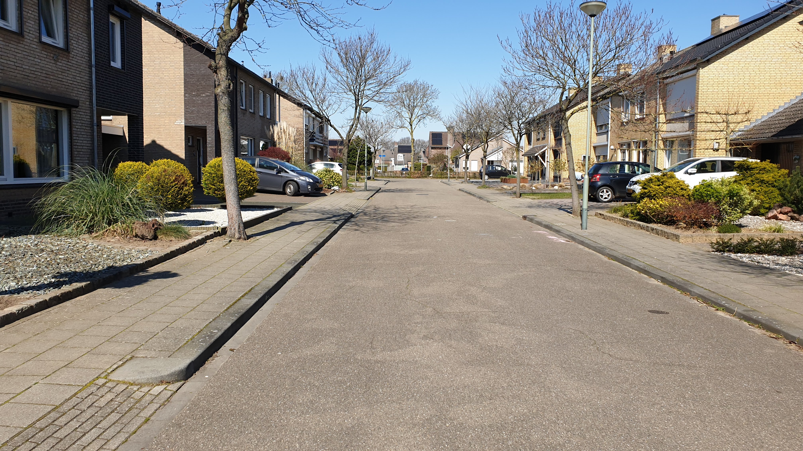
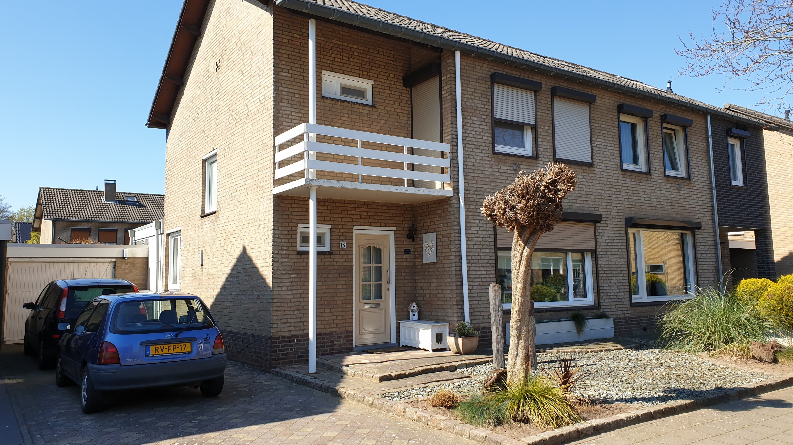
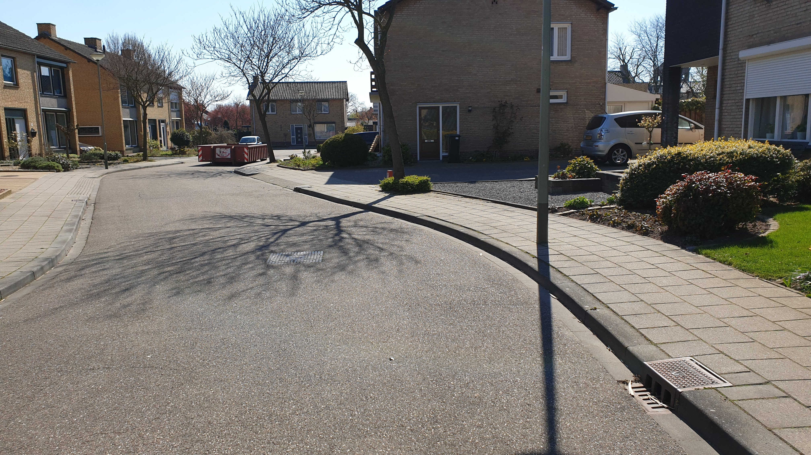

Melick is een kerkdorp in Limburg (Nederland) op de rechteroever van de Roer, ten zuiden van de stad Roermond. Melick behoort tot de gemeente Roerdalen en telt circa 3635 inwoners.
Zie meer op Melick Wikipedia.
De vlag van roerdalen:
De volgende foto's bevatten mijn huis en straat:
|  |  |  |